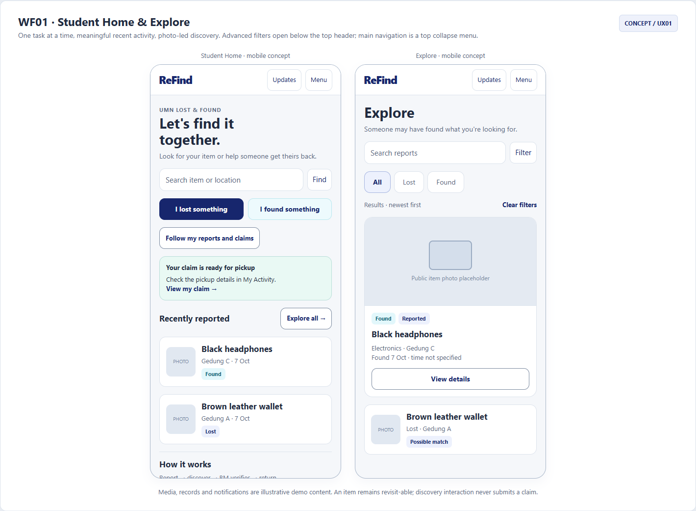
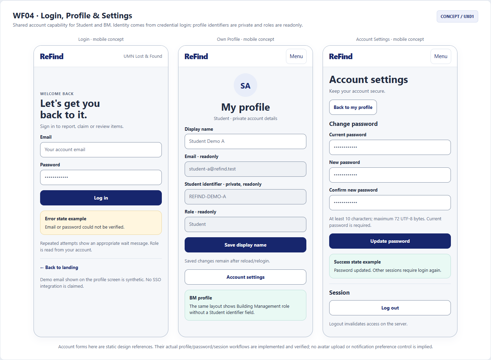
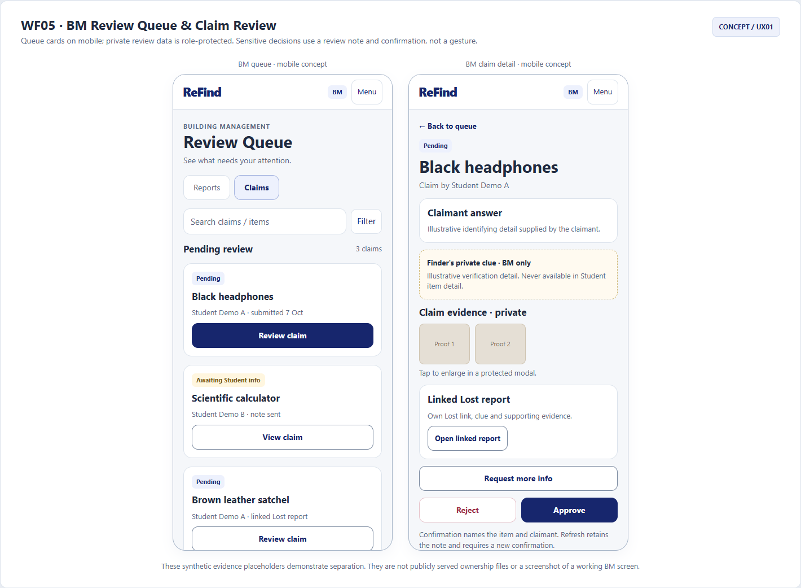
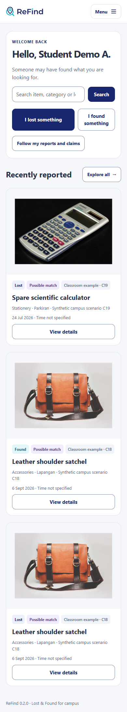
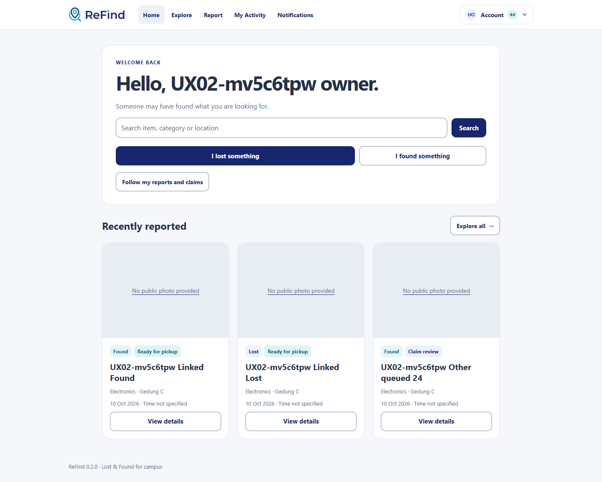
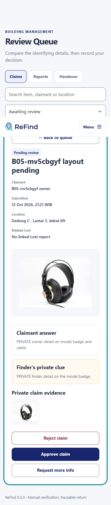
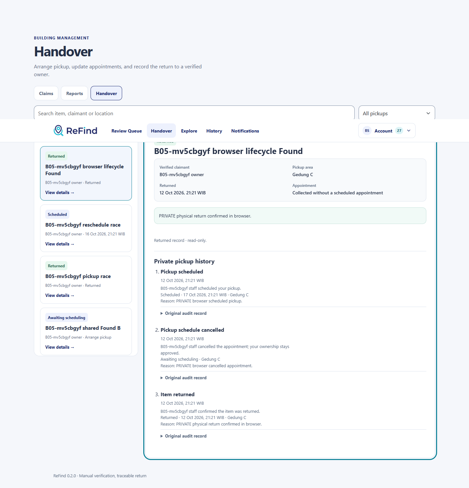
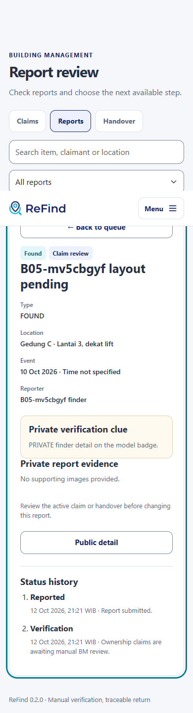
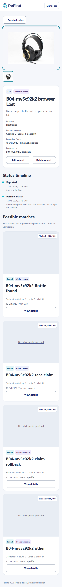
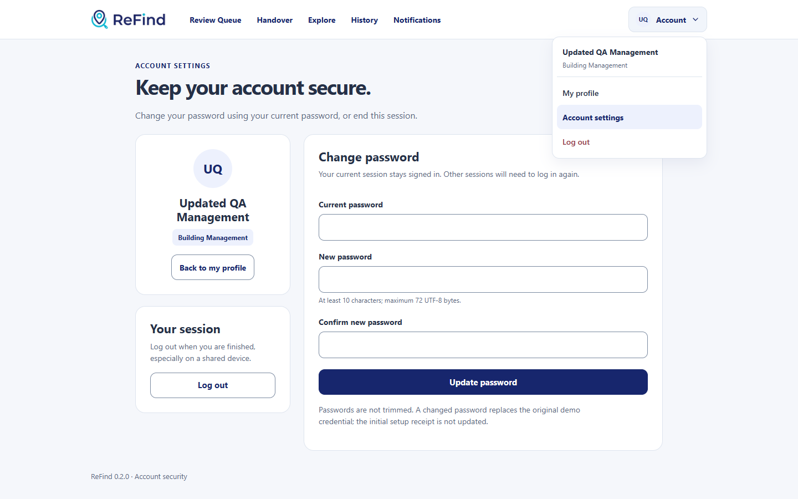

Final app, draw.io & release
Stricter matching, one active claim per Lost report, withdraw/release, pickup desk contact, History archive, quieter notifications and plain-language copy. 24 new v0.2.5 groups plus 28/24/24/27/15 regressions PASS. v0.2.5 report.
Outline navigation links and Edit/Delete pairing are available locally.15 UX groups and24/24/27 relevant regressions PASS; main data/schema retained. This is a folder-only label, with no new ZIP or GitHub push.
Open local Home · UX02 report · 15 UX checks · Renamed main smoke.
Mobile-first Lost & Found untuk Student dan Building Management.
40 synthetic reports,12 claims,6 handovers; auth/account/Student/BM workflows berjalan. Full Lost → Returned, privacy, cancellation, stale/races dan rollback lulus. Final draw.io source/export reconciliation:81 checks; fresh-install13 actual browser groups PASS pada server terisolasi.
Review Queue · Handover · Explore · Laporan B06 · Akun & mock inventory · Install/release
Synced selection, focused mobile detail/Back, identified confirmations, consistent status colours, Returned timestamps, direct pickup notifications and accessible optional uploads.12 UX groups plus28/24/24/27 regressions PASS; computed text/focus/control contrast improved.
UX01 report · 12 UX checks + contrast · Current main smoke. Latest ZIP locally: releases/ReFind_0.2.0_UX01.zip.
Latest UX01 fresh-install acceptance · Current Student clip · Current BM clip.13 browser groups PASS on the isolated empty-DB installation.
Dokumen blueprint
Scope, arsitektur & izin
Data, acceptance & hasil batch
Diagram & editable source
Sitemap & ERD
- Sitemap: PDF · PNG · .drawio
- ERD operational: PDF · PNG · .drawio
- ERD reference: PDF · PNG · .drawio


Final as-built SQL14 tables/25 FK, tanpa migration B03–B06. Nullability, UNIQUE dan kardinalitas dijelaskan dalam dictionary. Semua diagram memiliki editable draw.io sources.
FC01–FC06


Conceptual wireframe references · editable draw.io tersedia







Screenshot actual local UX02 · outline navigation




Screenshot actual UX01 checkpoint · visual/navigation fixes


Screenshot actual B06 checkpoint · expanded dataset & fresh install


Actual screen-only demo recordings
Five-minute presentation narration / sequence · Student clip · BM clip. Recorded on the isolated fresh installation with synthetic cases.
Screenshot actual B05 checkpoint







Screenshot actual B04



Screenshot actual B03


